Nabari, Mie: things to do, food and stays
Nabari · Mie
Nabari
Highlighted on the Mie map.
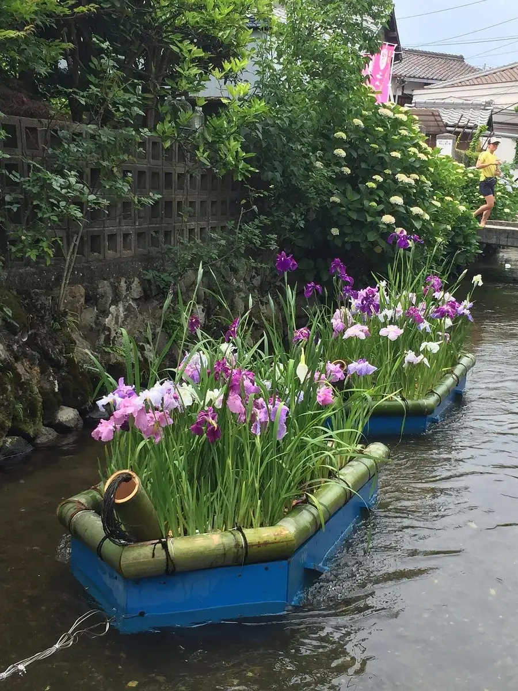
Stay
伊賀のかくれ宿 赤目温泉隠れの湯 対泉閣
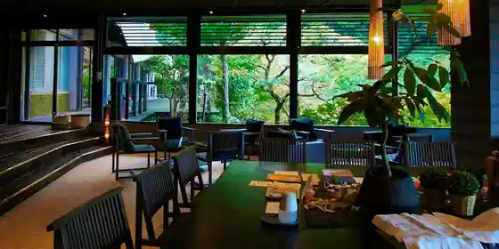
Iga Nokakure Yado Akame Onsen Kakure No Yu Tsui Izumi Kaku
Inn at Akame Onsen in Akame, Nabari.
ホテルルートイン名張
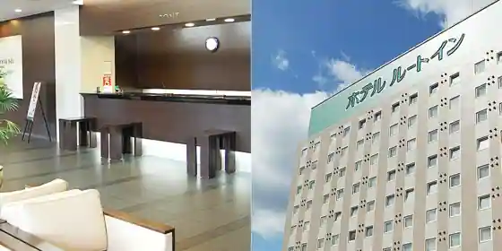
Hotel Route Inn Nabari
HOTEL AZ 三重名張店
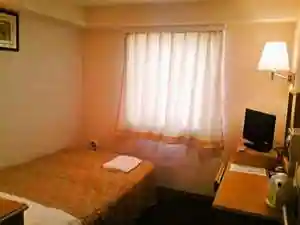
HOTEL AZ Mie Nabari
Inn in Mareodai, Nabari with buffet meals and breakfast available.
スマイルホテル名張
Sumairu Hotel Nabari
Hotel in Marunochi, Nabari with business travelers.
名張プラザホテル
Nabari Plaza Hotel
赤目四十八滝の湯宿 湯元赤目山水園
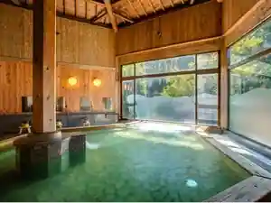
Akame Shiju Hachi Taki No Yuyado Yumoto Akame Sansui Sono
Inn in Akame, Nabari with private baths and in-room dining.
Dining
たまきや
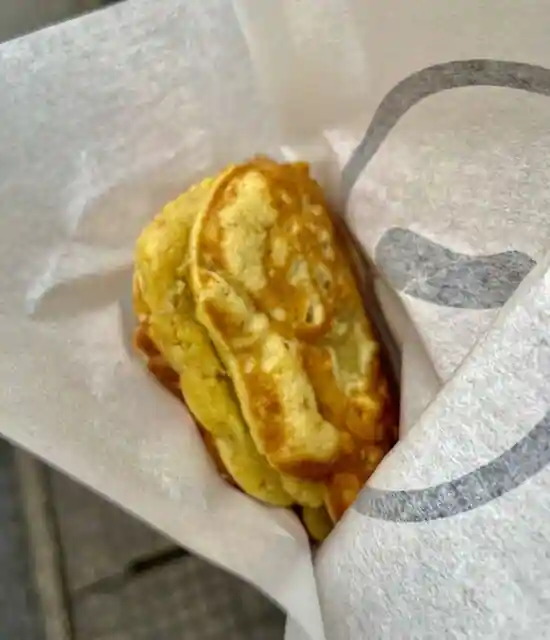
Tamakiya
シマリボン
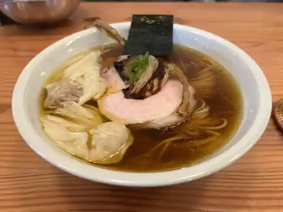
Shimaribon
そば. けいた
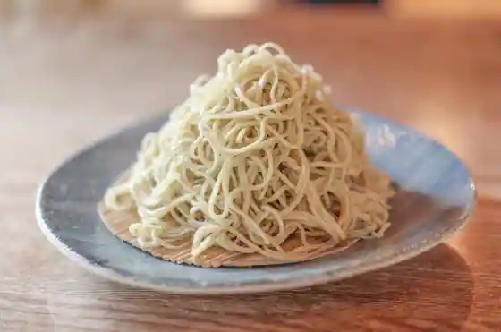
Soba. Keita
ミネソラ
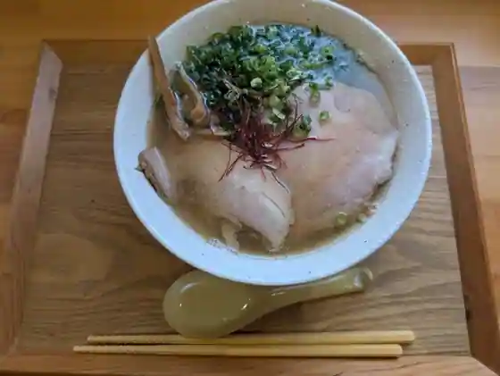
Minesora
点珈琲店
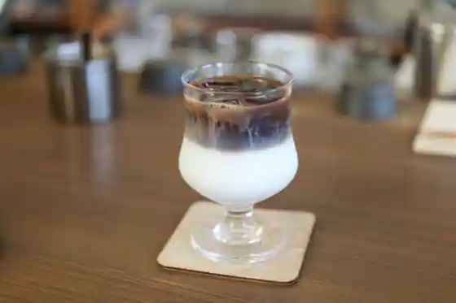
Coffee
つぐみカフェ
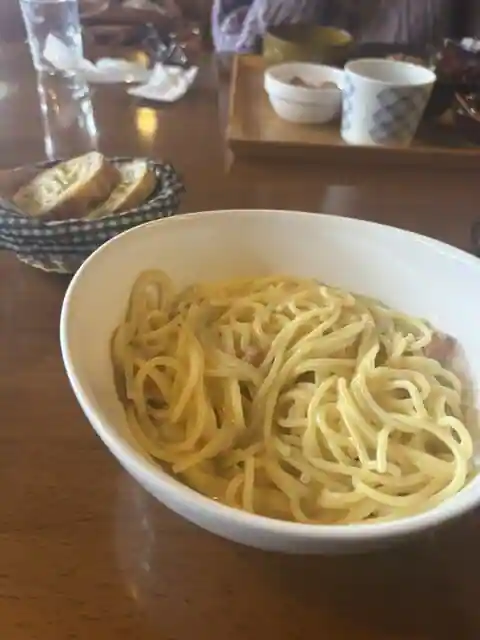
Tsugumi Cafe
金谷 桔梗が丘店
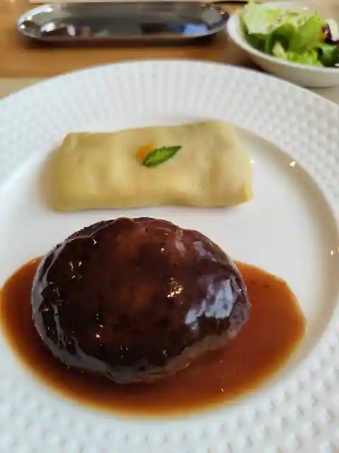
Kanaya Kikyo Ga Oka
あすの澪 名張本店
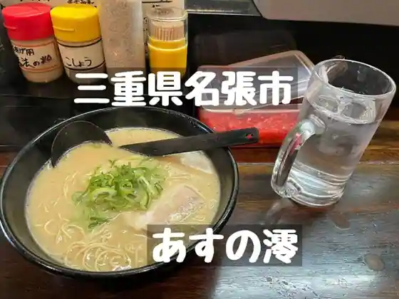
Asuno Mio Nabari Hon
麺や 弐凛
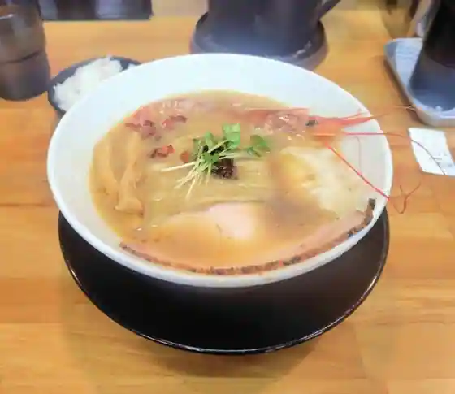
Men Ya Ni Rin
賛急屋
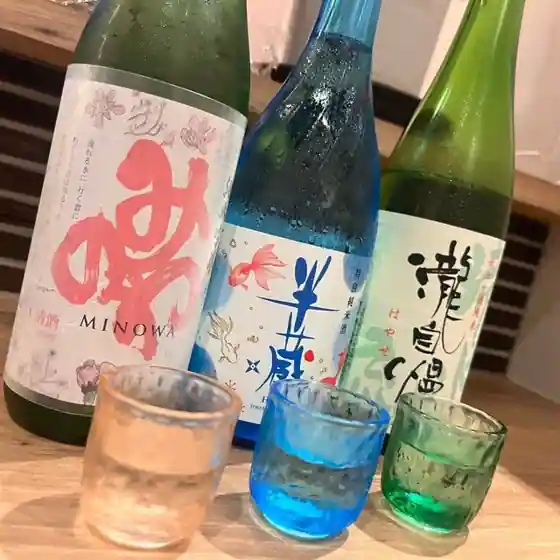
San Kyu Ya
三太夫
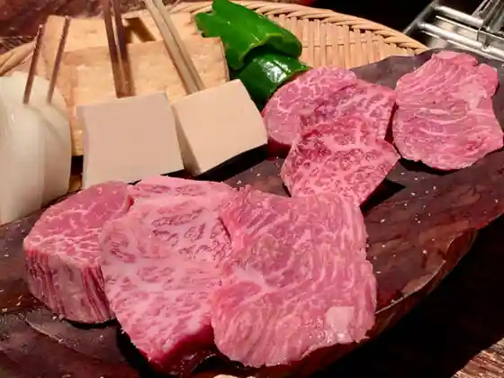
Sandayu
焼肉レストラン 奥田
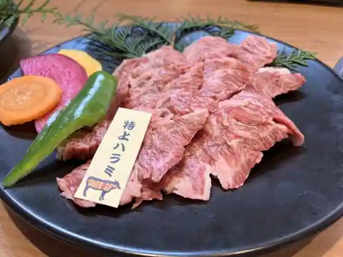
Yakiniku Restaurant Okuda
ラーメン 麦ほのか
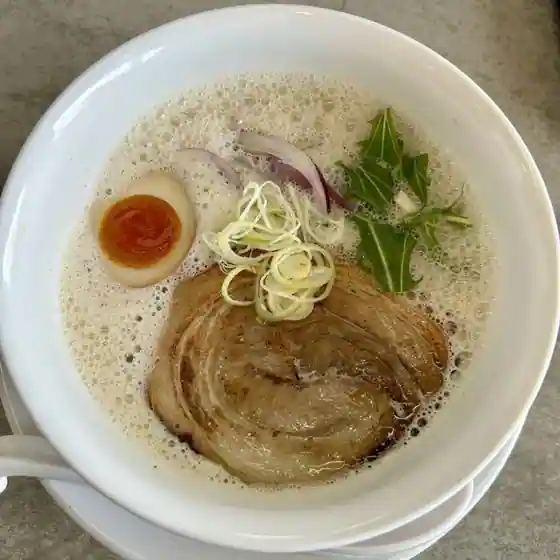
Ramen Mugi Honoka
忍法 赤目プリン
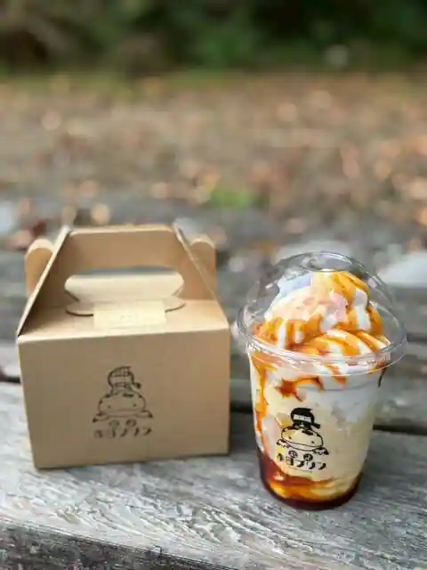
Ninpo Akame Purin
カフェ ミューク
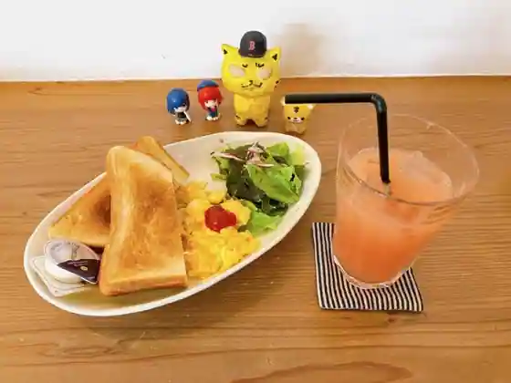
Cafe Myuku
敦煌 本店
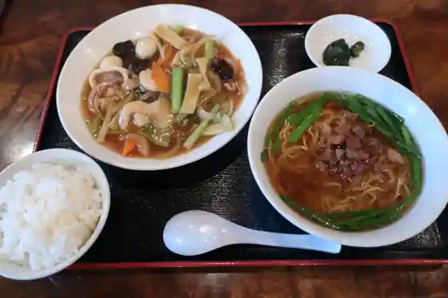
Tonko Hon
ごまめ
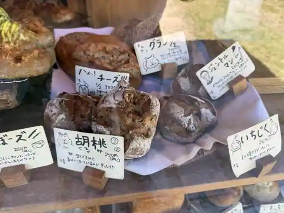
Gomame
cafe sanaburi
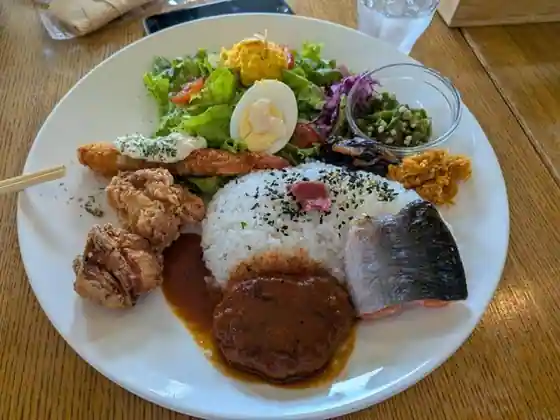
cafe sanaburi
寿司食堂にしおか
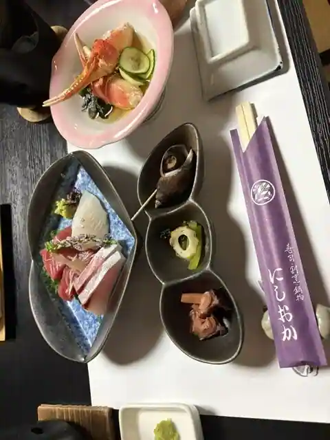
Sushi Shokudo Nishioka
かみ六
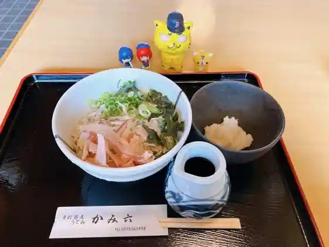
Kami Roku
鰻伊賀
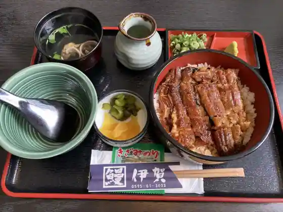
Unagi Iga
ダイハン 本店
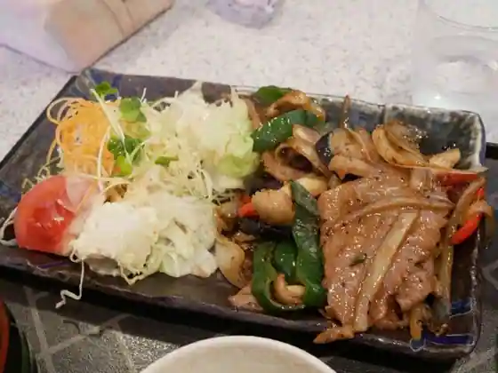
Daihan Hon
ばんびなっちょ
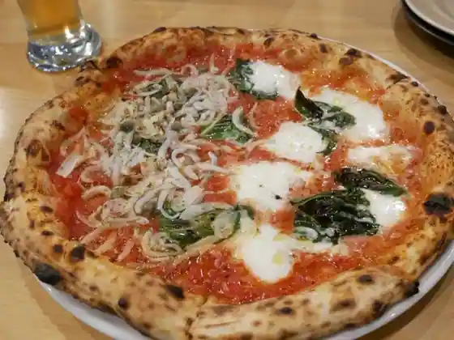
Banbinatcho
きはらし
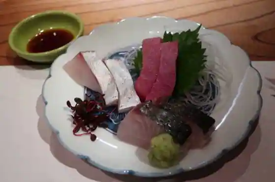
Kiharashi
Sights
Bi Hata Nitta Chiku no (Himawari)
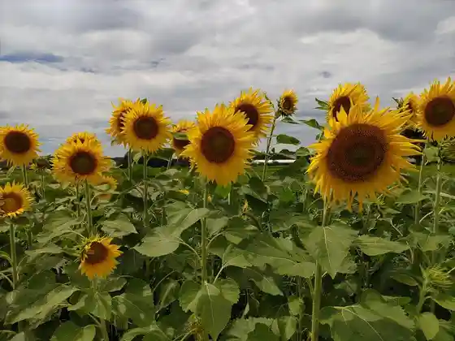
Bi Hata Nitta Chiku no (Na no Hanahata)
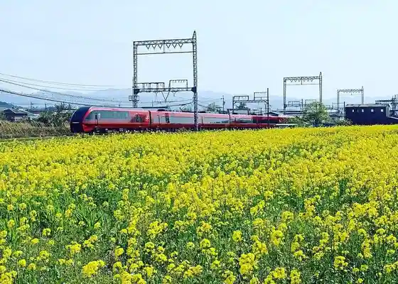
Miroku Tera
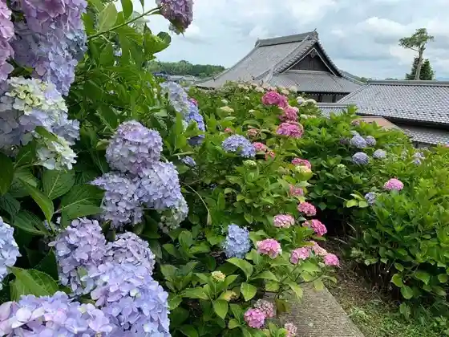
Iga Machikado Museum Hanabishi Iori Sumita Saketen
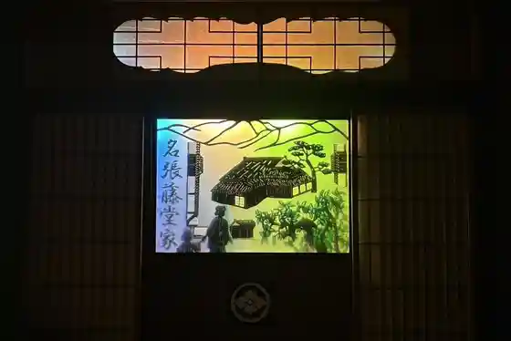
U Ryu Tomi Kokorozashi Ne Shrine
Joka Kawa Hanaikada
Nabari Yagawa no Senrozoi I no Na no Hana
Nabari Todo Ie Yashikiato
Tsumita Shrine
Akame Shiju Hachi Taki
Seirenjiko
Akame Taki Aquarium
Enju In
Toretate Nabari Koryu Kan
Bo Tsutsumi Sakura (Shidarezakura)
Ninja Forest
Akame Shizen History Museum
Akame Shiju Hachi Taki Eko Tour Desuku
Hanabishi Iori Rekishi Kage Gekijo
Iyashi Village Nabari Baths
Doraibuin Akame
Sugitani Shrine
Natsumi Haiji Ato Natsumi Haiji Tenjikan
Bi Hata Kofun Gun
Edogawaranpo Seitan Kinenhi
yuno CAMP SITE
Nabari Kawa Shoren Terakawa
Minami Ta Shrine
Ekimae Yakiniku NikuMachi
Kyochi Kei
Atago Shrine
Mudo Tera
Nagase no Hidari Kan Kaya
Kan'ami Kensho Hi
Uma Tsuka Burial Mound
Akai Tsuka Burial Mound
Ebisu Shrine